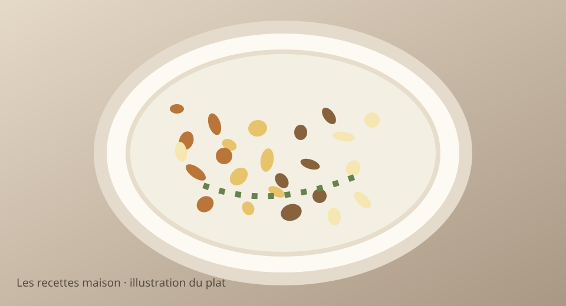

Lundi 16 novembre 2026 · Menu validé
Poulet doré, écrasé de pommes de terre et sauce champignons

Illustration stylisée, non photographie.
Version ados
Petites portions, ingrédients séparés, sans épices, tomates, carottes ni légumes verts. Pommes de terre et riz nature acceptés.
Version parents
Même base, agrémentée des légumes, sauce et assaisonnements indiqués dans les étapes.
Ingrédients
- 450 g de filets de poulet
- 650 g de pommes de terre
- 180 g de champignons de Paris
- 1 échalote
- 80 ml de crème légère
- 50 g de mâche
- 15 g de beurre
- 1 c. à soupe d’huile d’olive
- Sel, poivre et persil (parents)
Préparation simultanée, pas à pas
- Éplucher les pommes de terre, les couper en morceaux et cuire 18 à 22 min dans une casserole d’eau salée.
- Couper le poulet en morceaux identifiables. Le faire dorer à la poêle avec l’huile, puis poursuivre jusqu’à cuisson complète (74 °C à cœur). Réserver les petites portions des ados, sans épices.
- Écraser les pommes de terre à la fourchette avec le beurre et un peu d’eau de cuisson. Servir une partie nature aux ados.
- Dans la poêle, faire revenir l’échalote et les champignons émincés 5 min. Ajouter la crème, poivrer et laisser réduire 2 min.
- Servir le poulet et l’écrasé nature aux ados, sans sauce. Napper les portions parents de sauce aux champignons et ajouter la mâche lavée.
Prix et calories estimés, non vérifiés en magasin. Ajuster les quantités à l’appétit.